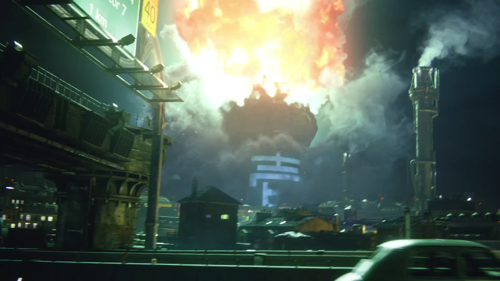

Public Relations - Peace Preservation - Arms Development - Science - Space Exploration - City Development - General Affairs
Shinra News
Updated 15 mins ago
TERRORISTS STRIKE AGAIN
PRESIDENT SHINRA VOWS
"WE WILL HAVE JUSTICE"
Two months after their deadly attack on Mako Reactor Number 1 that cost countless lives and left Sector 1 in ruins, Shinra police say that the terrorist group 'Avalanche' has been spotted infiltrating the perimeter of Mako Reactor Number 5. An alert has been sent out to all residents of Sector 5 to evacuate the premises immediately. President Shinra has urged citizens not to panic and to listen to local authorities for evacuation protocol. The military group SOLDIER has been disbatched to the area to assist security forces with the insurgents.
SNNet News Coverage Below:
Back To Top
Updated 5 weeks ago
SUSPECT WANTED

PLEASE CONTACT POLICE
Shinra Security Forces have identintified a suspect who they believe to be in charge of the terrorist group 'Avalanche' that was responsible for last months attack on Mako Reactor Number 1. If you see this man please alert local authorities.
Head of Public Safety, Heidegger, had this to say:
"We have long suspected that an attack on one of our cherished Mako Reactors may be imminent, though we had hoped that such evil plots would never come to fruition. The health and safety of the citizens of Midgar is of the utmost importance and we will exhaust our every resource to ensure that those responsible for this 'heinous' act will be held responsible. Turks intelligence, as well as anonymous informants, have led us to believe that this terrorist group may be operating out of the Sector 7 Slums."
A reward of G10,000 is being offered for any information regarding the suspects whereabouts.
Back To Top
Updated 8 weeks ago
EXPLOSION AT MAKO REACTOR

At 2:37 am this morning an explosion occured at Mako Reactor Number 1. The cause of the incident is still under investigation but authorities suspect that this may have been a pre-meditated attack. Though malfunctions at Mako Reactors have happened in the past, officials state that an accident of this magnitude is 'highly unlikey'. The number of casualties has not yet been confirmed but is expected to be in the thousands.
Head of Urban Development, Reeve, had this to say:
"Efforts to rebuild Mako Reactor Number 1 will begin immediately. However, right now I believe it is more important for us to come together as a community; to help those affected by this terrible tragedy and to send condolences to those who have lost loved ones."
Power outages may affect Sector 1 and the surrounding areas for the weeks to come and President Shinra asks the public for patience and understanding while he addresses this issue.
Back To Top
Updated 2 weeks ago
Shinra Technologies
Shinra Motor Mobiles has announced a new line of light-weight, 3-wheel Sedans that will be available later this year. These new models, developed by the Head of Shinra's Space Division Palmer, have state of the art Mako Engines which were originally used in The Shinra No. 26 Rocket but have never been available in commercial vehicles. Until now...
Shinra Motor Mobiles is once again setting the precedent for excellence and innovation that 'Keeps Midgar Moving Forward'.
Back To Top
Neo-Midgar Project

Neo-Midgar is President Shinra's vision to build a new metropolis of Midgar in the legendary promised land, and make it an improved city based upon the present design as allowed by the excess of Mako energy. This new city will be a utopia where all of Midgar's citizens will live together in harmony...
Back To Top
ENLIST NOW
Join Shinra's Elite Security Forces by registering below. Earn a starting pay of G300 a week while serving your community. From Shinra's Police Force all the way up to First Class SOLDIER, choose a career that offers growth, excitement, and PRIDE.